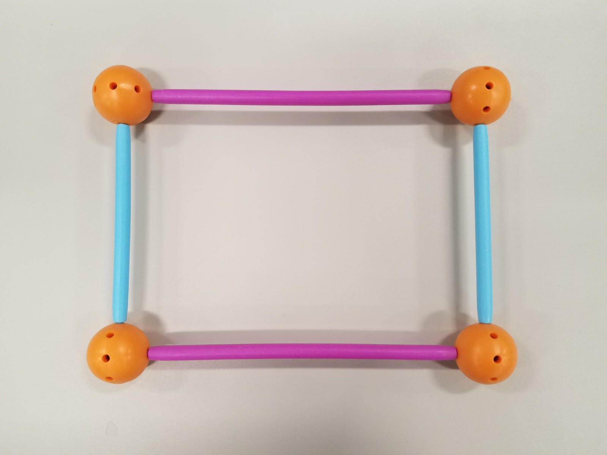
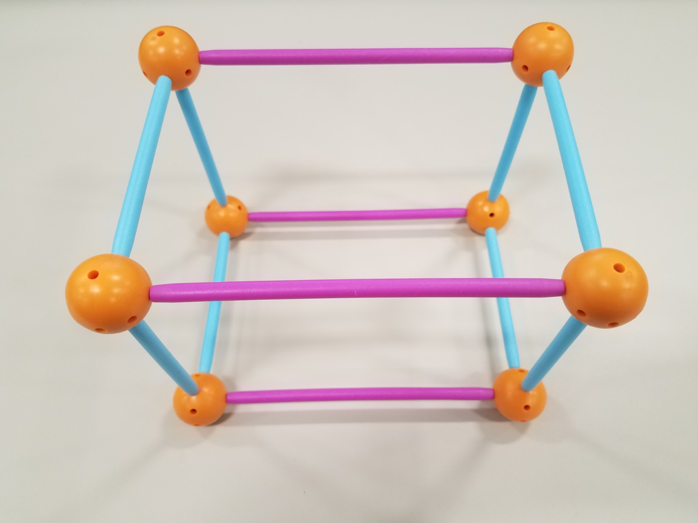
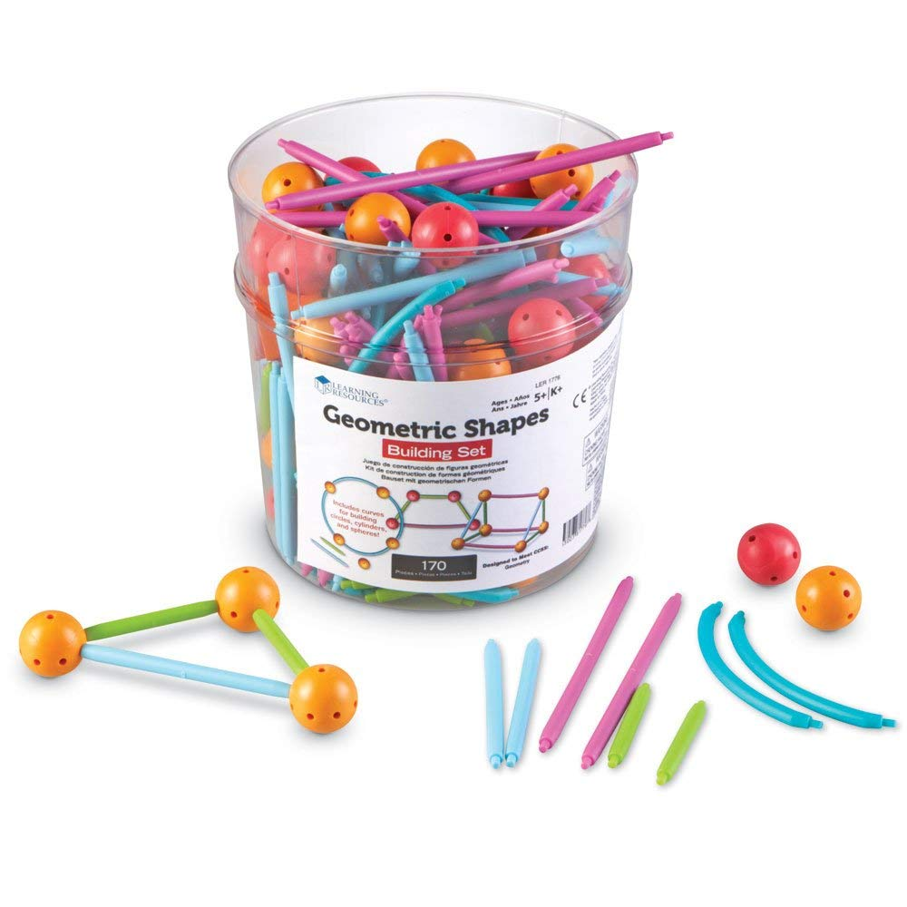

Geometric Shapes: Exploring 2D and 3D Shapes
Your Challenge
Your challenge is to build and explore the properties of as many basic 2D and 3D shapes as you can with the Geometric Shapes Building Set. Then, you will build a 3D model of a structure or object you can find in your environment.
  
What You'll Learn
- What makes a 2D shape.
- What makes a polygon.
- How to make 3D shapes from 2D shapes.
- How to measure the size of shape.
Stuff You'll Need
- Geometric Shapes Building Kit